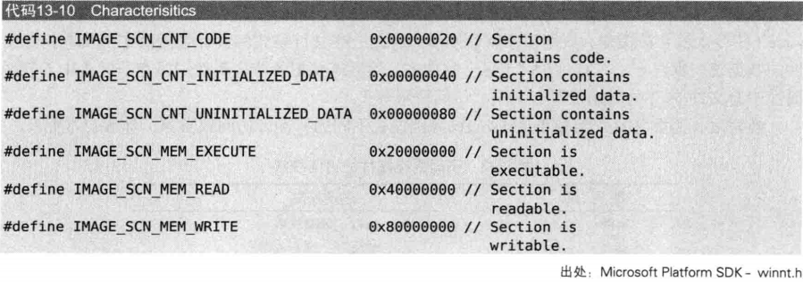

逆向工程学习-PE文件格式
PE文件格式
介绍：
PE文件是windows操作系统下的可执行文件的统称，一般指的是32位文件，64位文件称为【PE32+】
文件种类：
| 种类 | 文件 |
|---|---|
| 可执行文件 | EXE, SCR |
| 库系列文件 | DLL, OCX, CPL, DRV |
| 驱动程序 | SYS, VXD |
| 对象文件 | OBJ |
PE文件基本结构：
文件组成
PE头+PE体
PE头：DOS头；DOS存根；NT头；节区头【text（代码）；data（数据）；rsrc（资源）】
PE头与各节区的尾部存在一个【NULL填充】区域：
VA & RVA:
1.VA：进程虚拟内存的绝对地址
2.RVA：从某个基准位置开始的相对地址
（虚拟内存：在32位的Windows中，各个进程分配4GB的虚拟内存，所以VA的范围【00000000~ffffffff】）
PE内部信息大多数以RVA形式存在，这样方便地址重定位
PE头：
DOS头
1.起源：微软在创建PE文件时，DOS广泛使用，所以在PE头前面加了一个IMAGE_DOS_HEADER结构体，内容如下。
2.结构体大小共64字节，有两个重要成员【e_magic & e_lfanew】。
e_magic：DOS签名，对应的是字符===>”MZ”
e_lfanew：指示NT头的偏移，不同的文件值也不一样。
这里看出最后就是e_lfanew的值是 00 00 00 B0（小端序）
DOS存根
在dos头下面，大小不固定，有没有都行，由代码和数据混合而成
代码的作用就是在你用DOS运行时出现后面那句话
NT头（IMAGE_NT_HEADER）
NT头又名”文件头“，是表现文件大致属性的“IMAGE_NT_HEADER”结构体
内涵3个成员，总共大小为0xF8:(根据DOS头指出的偏移可以找到)
第一个成员是签名结构体：值为【50 45 00 00】=====>’PE‘
第二个成员是文件头结构体===>IMAGE_FILE_HEADER
第三个成员是可选头结构体===>IMAGE_OPTIONAL_HEADER
文件头结构体（IMAGE_FILE_HEADER）
表现文件大致属性 IMAGE_FILE_HEADER结构体
对应着如下结构体
内涵四个重要成员：Machine，NumberOfSections，SizeOfOptionalHeader，Characteristics
（程序能否运行的关键）
Machine：每个CPU都有唯一的Machine码

这里看到我的CPU对应的机器码是：0x014C
- NumberOfSections
指出文件中存在节区的数量，一定要大于零。定义与实际不符会运行失败
看上图知道应该是”05“
- SizeOfOptionalHeader
指出NT结构体最后一个成员【IMAGE_OPTIONAL_HEADER32】的结构体长度，64位和32位不同。
- Characerristics
用于标记文件属性。即文件是否是可运行状态，是否是DLL文件等信息，通过bit OR形式组合起来。
注：Characteristics的值有可能是【0002h】（不可执行），比如obj文件和resource DLL文件。
这里SYS文件时0x1000
可用于区分不同的文件类型
可选头结构体（IMAGE_OPTIONAL_HEADER32）
特点：PE头结构体中最大的结构体：
关键成员，出错文件将无法运行：Magic，AddressOfEntryPoint，ImageBase，SectionAlignment，FileAlignment。
对应着如下节选的结构体
- Magic：在32位中，Magic码是10B，64位是20B；这里显然是一个32位程序
AddressOfEntryPoint：拥有EP和RVA的值，该值指出程序最先执行的代码起始地址
ImageBase：当PE文件装入内存时，指出文件 的优先装入地址
Tips：EXE,DLL文件一般装载到用户内存的0~7fffffff中，SYS文件载入内核内存的80000000~ffffffff里；在执行PE文件时，PE装载器事先创建进程，文件载入内存，设置EIP的值为
SectionAlignment，FileAlignment：PE文件的PE体部分划分不同区节，存储着不同类别的数据，FileAlignment指定了节区在磁盘文件中的最小单位；SectionAlignment指定了节区在内存中的最小单位；在一个文件中，二者的值不一定相等，但是节区的大小必然是SectionAlignment或FileAlignment的整倍数。
SizeOfImage：指定了PE Image在虚拟内存中所占的大小
- SizeOfHEADER：指出整个PE头的大小，该值一定是FileAlignment值的整数倍。第一节区所在位置与SizeOfHEADER距离文件开始的偏移量相同
- Subsystem：该值用来区分系统驱动文件和普通的可执行文件。
| 值 | 含义 | 备注 |
|---|---|---|
| 1 | Driver文件 | 系统驱动（如：ntfs.sys） |
| 2 | GUI文件 | 窗口应用程序（如：记事本.exe） |
| 3 | GUI文件 | 控制台应用程序（如：CMD.EXE) |
- NumberOfRvaAndSizes：指定结构体：IMAGE_OPTIONAL_HEADER32最后一个成员数组的个数，虽然明确指出时16，但是也不一定
- DataDirection：IMAGE_OPTIONAL_HEADER32最后一个成员；由IMAGE_DATA_DIRECTORY结构体构成的数组，每一项都有被定义的值：
节区头（IMAGE_SECTION_HEADER）
组成：由IMAGE_SECTION_HEADER结构体组成的数组，每个结构体对应一个节区。
作用：定义了各节区的属性
结构体：
重要成员：
| 项目 | 含义 |
|---|---|
| VirtualSize | 内存中节区所占大小 |
| VirtualAddress | 内存中节区起始地址 |
| SizeOfRawData | 硬盘中节区所占大小 |
| PointerToRawData | 硬盘中节区起始地址 |
| Characteristics | 节区属性 |
Tips：VA和PointerToRawData不带有任何值，分别由IMAGE_OPTIONAL_HEADER32结构体中的SectionAlignment和FileAlignment定义；SizeOfRawData和VirtualSize的值一般不同
Characteristic由以下的值组合而成：

Ps:当PE文件加载到内存时，不是原封不动的加载，而是根据节区头中定义的节区起始地址，节区大小等加载，所以在磁盘里的PE文件和在内存中的PE文件具有不同的形态，这一过程称为“映像”（image）
RVA to RAW
是什么：
PE文件加载到内存时，每个节区都要能准确完成内存地址与文件偏移间的映射。这一过程称为RVA to RAW（文件偏移）。
计算方法：
公式：
RAW-PointerToRawData=RVA-VA
RAW=RVA-VA+PointerToRawData
例题：
1.当RAV（相对地址）= 5000时，File Offset = ？
已知RAV=5000在.text节区，且ImageBase=01000000，根据
- RAW=RVA-VA+PointerToRawData
RAW=5000-1000+400=4400
IAT（Import_Address_Tables）
介绍：
IAT：Import_Address_Tables,导入地址表）是一个用来记录程序正在使用哪些库里的哪些函数的表格
DLL（动态链接库）：
优点：
1.不需要把库包含到程序中（C语言就需要提前导入库），需要时调用即可。
2.可以在多个进程中共享。
3.更新库时只需要替换相关的DLL文件。
加载方式：
1.显示链接：程序使用时加载，使用完毕后释放内存。
2.隐式链接：程序开始时一同加载DLL，程序终止时释放内存。（IAT提供的机制与隐式链接有关）
IMAGE_IMPORT_DESCRIPTOR（IID）:
也被称为IMPORT Directory Table
该结构体记录着PE文件要导入哪些库文件。（Import：导入，向库提供服务（函数）；Export：导出，由库向PE文件提供服务（函数））
1.执行一个程序需要许多库，导入多少库，就有多少这种结构体，这些结构体构成一个数组，该数组以NULL结构体结束。
2.重要成员：OriginalFirstThunk: 是INT的地址（RVA），Name：库名称字符串的地址（RVA），FirstThunk：IAT的地址 RVA。
- INT===>IMPORT NAME TABLE；IAT===>IMPORE ADDRESS TABLE（table：数组）
- INT与IAT是长整型数组，以NULL结束
- INT中个元素的值为IMAGE_IMPORT_BY_NAME结构体指针
- INT IAT大小应相同

PE装载器把导入函数输入至IAT的顺序
尝试找到IID结构体
1.该结构体不在PE头中，他存在于PE体中，但是他的位置在PE头中
2.位于：IMAGE_OPTIONAL_HEADER32.DataDirectory[1].VritualAddress；这便是结构体的起始地址
EAT
介绍：
1.EAT是一种核心机制，可以让不同的程序调用库提供的函数。只用通过EAT才能准确求得从相应库中导出函数的起始地址。
2.PE文件特有的结构体image_export_DIRECTORY保存着导出信息。并且PE文件中仅有一个用来说明库EAT的结构体
【用来说明IAT的结构体IMAGE_IMPORT_DESCRIPTOR以数组的形式存在，拥有多个成员，这样PE文件可以同时导入多个库】
IMAGE_EXPORT_DIRECTORY：
结构体如下
重要成员：
| 项目 | 含义 |
|---|---|
| NumberOfFunctions | 实际的Export函数的个数 |
| NumberOfNames | Export函数中具名的函数个数 |
| AddressOfFunctions | Export函数地址数组（元素个数等于表中第一个项目） |
| AddressOfNames | 函数名称的地址数组（元素个数等于表中第二个项目） |
| AddressOfNameOrdinals | Ordinal地址数组（元素个数等于表中第二个项目） |
Ordinals：导出函数的固有编号。因为有的函数没有函数名，只有一个编号
GetProcAddress():
作用
从库中获得函数地址，该API引用EAT来获取指定的API的地址
原理
通过引用EAT来获取指定API的地址
总结
1.PE规范只是一种规范，仅此而已。
2.PE头并非一成不变，而是灵活度极高。